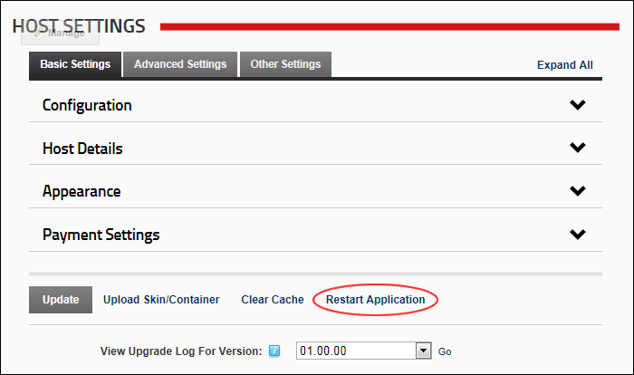

Restarting the Application
How to restart the DNN application.
Navigate to Host >
Host Settings
.
Click the
Restart Application
button located at the base of the module.

Restarting the Application
 Host Settings.
Host Settings.